| Projeto | VIBROTÁTIL®, Dispositivo Inteligente de Percepção Vibrotátil para Pessoas com Deficiência Auditiva |
| Módulo | Módulo III, aplicativo móvel baseado nos recursos do smartphone |
| Organização | Projeto em nome individual (CPF) |
| Versão do documento | 1.0, emissão inicial |
| Data | 17 de novembro de 2026 |
| Repositório | github.com/jaimevendrame/vibrotatil |
| Protótipo publicado | jaimevendrame.github.io/vibrotatil/ |
| Commit documentado | 815d661 |
| Tecnologia | HTML5, CSS3 (design tokens custom properties) e JavaScript ES2020 sem frameworks |
| Volume de código | 1.453 linhas em 3 arquivos-fonte (HTML 207 · CSS 779 · JS 467) |
| Validação | 17 asserções automatizadas com Playwright, sem erros de console |
O projeto VIBROTÁTIL® resolve a percepção de eventos sonoros por pessoas com deficiência auditiva severa, profunda ou total irreversível, convertendo informação acústica em estímulo físico. A solução foi estruturada em três módulos de complexidade crescente, escolhidos para permitir a validação incremental do conceito antes de qualquer investimento em fabricação.
| Módulo | Forma | Estado documentado | Papel no ecossistema |
|---|---|---|---|
| I | Circuito de bancada | Protótipo funcional, em operação | Comprova o princípio de conversão som → vibração. Usa microfone eletreto, LED e motor vibratório, com ajuste manual de sensibilidade. Sem filtros e sem capacidade de diferenciação de fontes. |
| II | Equipamento dedicado | Software em desenvolvimento, estimado em 40% | Incorpora DSP, filtragem seletiva e classificação de eventos sonoros, com hardware próprio e microprocessor dedicado. Previsto em 18 a 20 meses de trabalho adicional. |
| III | Aplicativo de smartphone | Este documento | Transfere as capacidades do Módulo II para o celular, aproveitando microfone e processador já existentes. Estimativa de conclusão em até 12 meses, partindo de 70% de desenvolvimento informado pela equipe. |
O protótipo tem finalidade estritamente demonstrativa e de validação de interface. Seus objetivos são:
A distinção entre o que o protótipo demonstra e o que ele simula determina a leitura correta deste documento. Todo o conjunto de funcionalidades abaixo está ausente da implementação:
| Capacidade | Status no protótipo | Situação na versão real |
|---|---|---|
| Captura de áudio do microfone | Não implementada | Requer getUserMedia() + Web Audio API + permissão do sistema operacional |
| Classificação de sons | Sorteio aleatório entre 6 categorias | Requer modelo treinado, base de dados rotulada e inferência local |
| Processamento digital de sinais | Não implementado | Requer FFT, filtragem passa-banda e compressão dinâmica |
| Conexão com Bone, Chest e Wrist | Somente alternadores de estado | Requer Bluetooth Low Energy com protocolo proprietário |
| Vibração tátil | Real, via navigator.vibrate() | Funcional no protótipo; intensidade varia entre aparelhos |
| Persistência de preferências | Real, via localStorage | Funcional no protótipo; migrar para armazenamento nativo |
| Notificações em segundo plano | Não implementadas | Requer regras específicas de cada sistema operacional |
O protótipo foi organizado em quatro camadas com fronteiras explícitas. A propriedade central dessa organização é que a camada de dados simulados pode ser substituída por um motor real de classificação sem alteração alguma nas telas, desde que o contrato de dados seja respeitado.
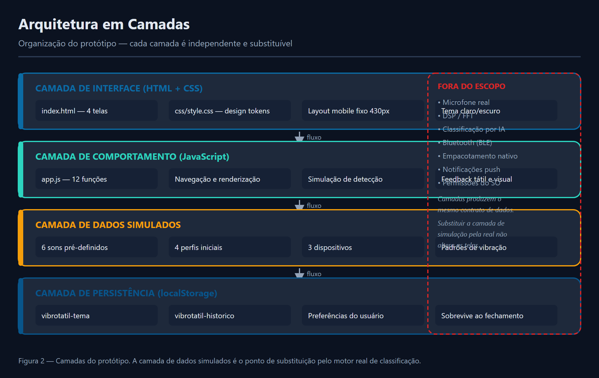
A fronteira entre simulação e comportamento está definida pelo formato do objeto de som. Este é o ponto exato onde o motor de classificação real deverá ser conectado:
// js/app.js — definição canônica de um evento sonoro { id: 'choro', // identificador interno label: 'Choro de bebê', // rótulo exibido ao usuário icone: '👶', // representação visual dispositivo: 'chest', // destino do alerta tátil padrao: '3 pulsos longos' // descrição legível do padrão }
A camada de comportamento consome esses objetos por meio de duas funções de alto nível:
detectarSomSimulado(), que sorteia um objeto e dispara o ciclo completo de
feedback, e detectarSomEspecifico(), que recebe um objeto já escolhido. Esta
última é exatamente a assinatura que a versão real deverá assumir, trocando o sorteio pela
saída do classificador.
detectarSomSimulado() e detectarSomEspecifico()
significa que a transição para produção não exige reescrita da camada de interface. Bastará
reimplementar a primeira função, trocando o sorteio por inferência do modelo, e manter a
segunda intacta. O mesmo raciocínio se aplica à camada de vibração: o padrão tátil é obtido
por obterPadraoVibracao(idSom), função isolada e determinística.
O scanner da tela principal executa um ciclo de sete etapas quando acionado. A Figura 3 detalha esse percurso, incluindo o laço de reiteração que mantém a escuta ativa.
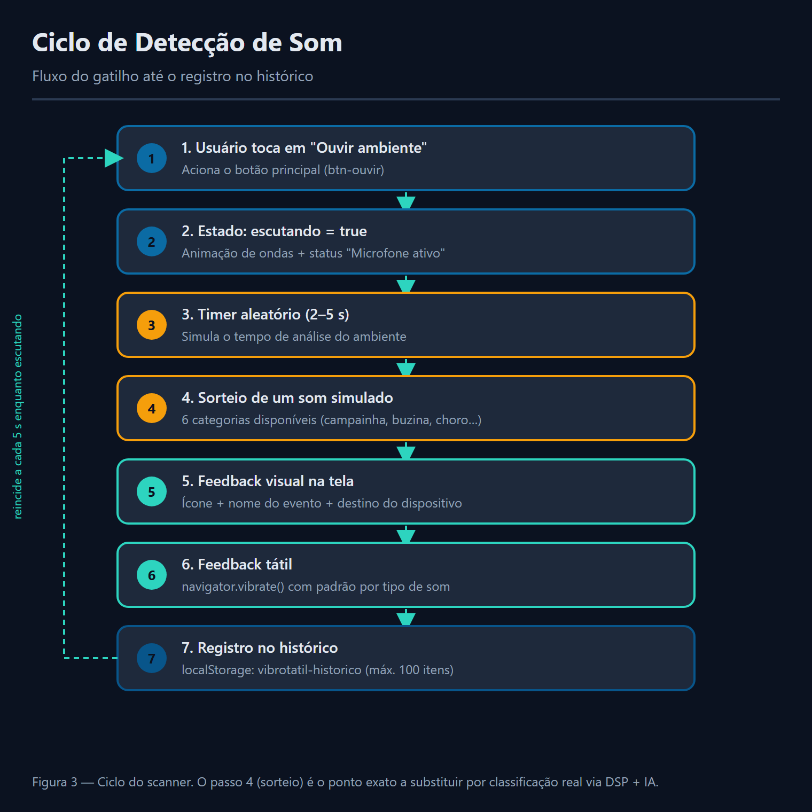
| # | Etapa | Implementação | Correspondente na versão real |
|---|---|---|---|
| 1 | Acionamento | Clique em #btn-ouvir | Idêntico, acrescido de solicitação de permissão de microfone |
| 2 | Estado de escuta | Classe .escutando + ondas em animação CSS | Idêntico, mais indicador de permissão concedida |
| 3 | Janela de análise | setTimeout aleatório entre 2.000 e 5.000 ms | Análise contínua por janela deslizante sobre o fluxo de áudio |
| 4 | Escolha do evento | Sorteio indexado em SONS_SIMULADOS | Saída do classificador, com limiar de confiança |
| 5 | Feedback visual | Atualização de ícone, título e subtítulo | Idêntico |
| 6 | Feedback tátil | navigator.vibrate(padrao) | Idêntico, mais roteamento para o dispositivo pareado |
| 7 | Registro | localStorage, máximo de 100 itens | Idêntico, com sincronização opcional em nuvem |
O aplicativo é organizado em quatro telas, acessadas por uma barra de navegação inferior permanentemente visível. Cada tela secundária oferece adicionalmente um botão de retorno.
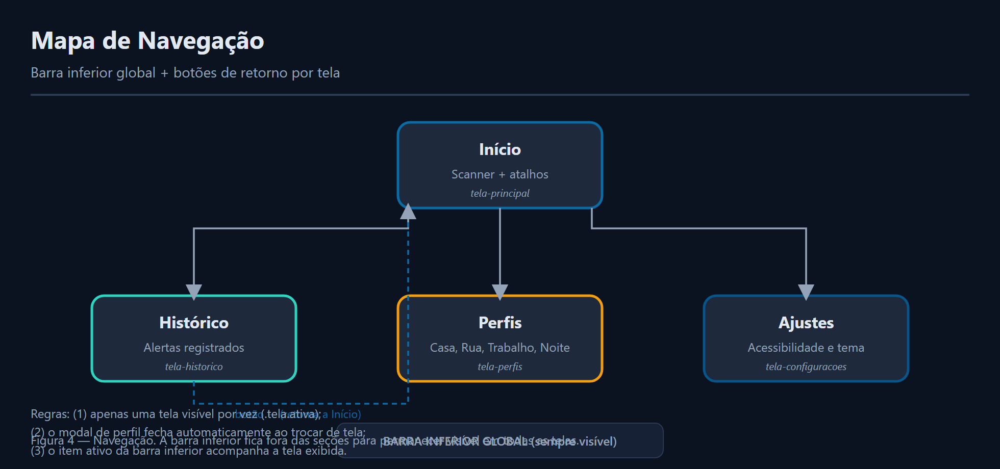
| Tela | Identificador | Conteúdo | Estado quando exibida |
|---|---|---|---|
| Início | tela-principal | Scanner, resultado da detecção e atalhos por tipo de som | Padrão na abertura; animações de escuta ativas quando solicitado |
| Histórico | tela-historico | Lista de alertas com ícone, evento, destino e horário | Recarregada a cada entrada; exibe estado vazio quando não há registros |
| Perfis | tela-perfis | Perfis de contexto, com criação de novos | Recarregada a cada entrada; modal fecha automaticamente na troca de tela |
| Ajustes | tela-configuracoes | Acessibilidade, dispositivos conectados e informações do aplicativo | Reflete o tema corrente e o estado dos dispositivos simulados |
Apenas uma tela pode estar visível simultaneamente. A regra é implementada por uma única classe CSS e aplicada de forma determinística em JavaScript:
/* css/style.css — a regra precisa ser declarada em ordem correta */ .tela { display: none; // estado padrão: oculta min-height: 100vh; padding: 0 1rem 96px 1rem; flex-direction: column; } .tela.ativa { display: flex; // estado exibido: apenas a tela ativa }
display: none e display: flex na mesma
regra .tela. Como a segunda declaração prevalece, todas as quatro telas ficavam
visíveis ao mesmo tempo, sobrepondo-se. O defeito foi detectado por inspeção automatizada. A
correção exigiu separar os dois estados em regras distintas. O teste de regressão
apenas uma tela visível foi incorporado à suíte de validação justamente para
impedir a reintrodução do problema.
O aplicativo mantém proporção de celular em qualquer tamanho de tela. No computador, ele é apresentado centralizado, com moldura e fundo neutro; no aparelho, ocupa a largura total disponível.
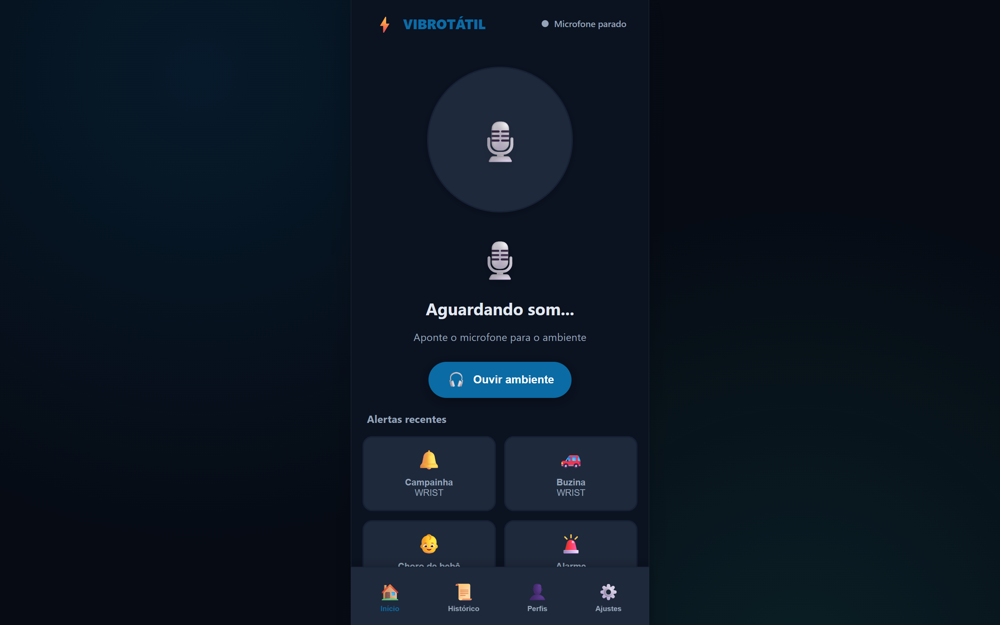
A implementação usa um contêiner com largura máxima de 430 px e os elementos de posicionamento absoluto, isto é, a barra de navegação, as notificações e o modal, são dimensionados em relação a essa mesma medida, de modo que permaneçam contidos na moldura do celular independentemente da resolução da janela.
Esta seção documenta cada funcionalidade do protótipo. Para cada uma são apresentados o comportamento implementado, o.print ilustrativo do estado correspondente, os dados envolvidos e os requisitos para a conversão em comportamento real.
O scanner ocupa a área central da tela inicial. Seu elemento principal é o botão Ouvir ambiente, que alterna o estado de escuta. Acompanhamento visual dá-se por três elementos: o círculo pulsante com o ícone de microfone, as ondas concêntricas em expansão e o indicador de status no cabeçalho.
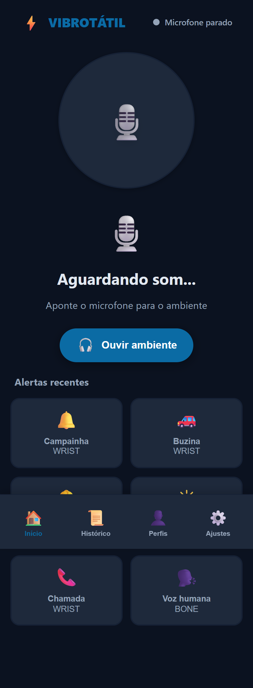
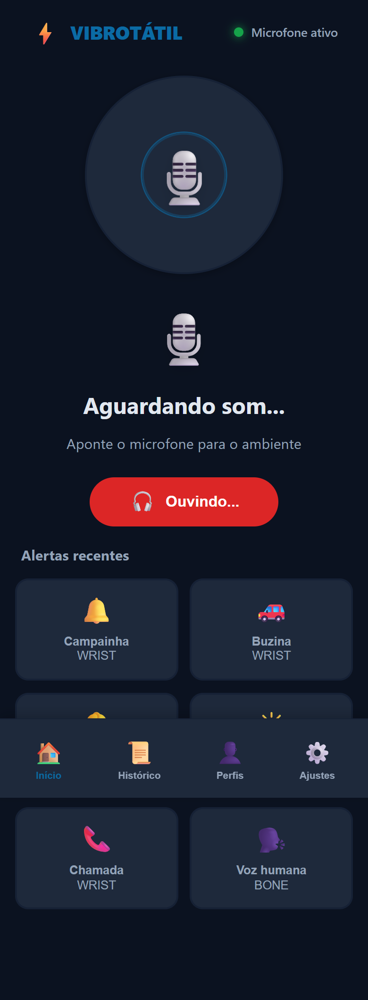
| Aspecto | Comportamento implementado |
|---|---|
| Estado inicial | estado.escutando = false; círculo estático; indicador do cabeçalho exibe "Microfone parado" |
| Acionamento | Alterna para escuta; aplica a classe .escutando ao circuito visual; botão assume a cor de alerta e a animação pulsarGravar |
| Animação | Três ondas concêntricas com atrasos escalonados de 0 s, 0,6 s e 1,2 s, em ciclo de 2 s |
| Interrupção | Segundo toque no botão encerra a escuta, restaura o estado e cancela a detecção pendente |
| Janela de análise | Primeira detecção entre 2.000 e 5.000 ms; detecções subsequentes a cada 5.000 ms |
| Limite de duração | Estado de escuta não consome bateria nem recursos, já que o ciclo é puramente simulado |
A detecção produz três efeitos simultâneos: a atualização do painel de resultado, a propagação do padrão tátil e o registro no histórico. O painel de resultado ocupa a região central da tela e comunica o evento por ícone, rótulo e destino.
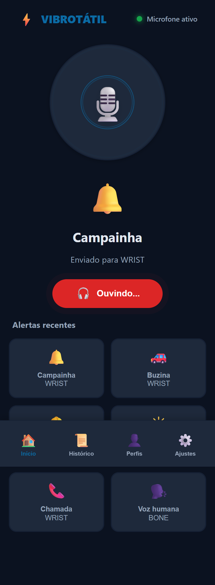
O aplicativo trabalha com seis categorias sonoras, cada uma associada a um dispositivo de destino e a um padrão vibratório próprio. Essa correspondência unívoca é o que permite ao usuário diferenciar eventos sem ouvir o som original.
| Categoria | Destino | Padrão vibratório | Considerações para a implementação real |
|---|---|---|---|
| Campainha | Wrist | Pulso longo + 2 curtos | Campainhas residenciais apresentam grande variabilidade tonal e de duração; o sistema real exigirá cadastro da campainha específica do usuário |
| Buzina | Wrist | 2 pulsos rápidos | Confunção provável com alarmes e apitos; exige faixa de frequência específica |
| Choro de bebê | Chest | 3 pulsos longos | Alto valor de uso e de contexto emocional; exige alta taxa de acerto, pois falso positivo causa alarme desnecessário |
| Alarme | Wrist | Sequência rápida repetitiva | Categoria crítica, onde falso negativo tem consequência direta |
| Chamada | Wrist | Vibração contínua curta | Requer detecção de chamadas, que é distintas de voz comum |
| Voz humana | Bone | Padrão de fala | Detecção de voz em ambiente ruidoso exige separaçãopectral da fala |
A sinalização visual é o canal principal de comunicação do aplicativo, por ser o único que transmite o conteúdo semântico do evento, isto é, o nome da categoria, e não apenas a sua presença. Ela é composta por três elementos no painel de resultado e complementada por uma notificação temporária.
| Elemento | Identificador | Comportamento |
|---|---|---|
| Ícone do evento | #icone-resultado | Substituído pelo emoji da categoria detectada; 3,5 rem, com sombra suave |
| Rótulo do evento | #texto-resultado | Exibe o nome da categoria; 1,5 rem, peso 700 |
| Destino | #subtexto-resultado | Indica o dispositivo que recebeu o alerta, em maiúsculas |
| Notificação | #toast | Faixa flutuante com a categoria detectada; some após 2,5 a 3 s; exposta a leitores de tela por aria-live="polite" |
| Destaque do atalho | classe .detectado | O botão da categoria correspondente na grade de atalhos pulsa por 900 ms |
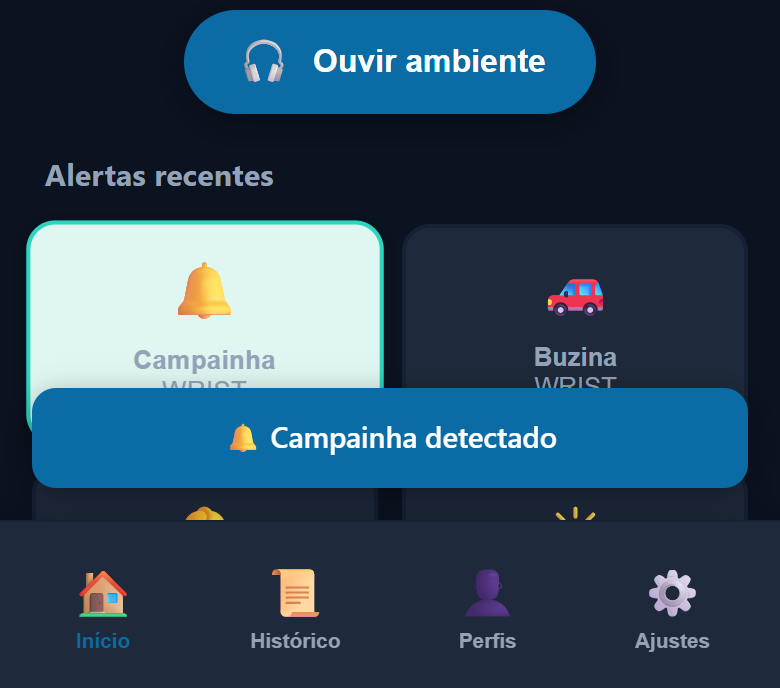
Este é o único canal do protótipo cuja implementação é integralmente real. A API
navigator.vibrate() existe nas plataformas móveis e produz vibração física no
aparelho, o que confere ao protótipo fidelidade tátil real, desde que o aparelho reporte o
suporte à API.
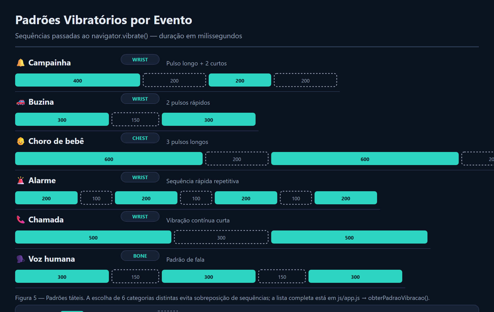
A tabela de padrões é a função obterPadraoVibracao(idSom), que traduz o
identificador da categoria em uma matriz de durações em milissegundos, com valores positivos
representando vibração e negativos representando pausa.
| Categoria | Matriz transmitida ao aparelho | Duração total | Distingibilidade |
|---|---|---|---|
| Campainha | [400, 200, 200, 200] | 1,2 s | Alta, ritmo lento e assimétrico |
| Buzina | [300, 150, 300] | 0,75 s | Média, dois pulsos iguais |
| Choro de bebê | [600, 200, 600, 200, 600] | 2,4 s | Alta, três pulsos longos |
| Alarme | [200,100,200,100,200,100,200] | 1,2 s | Alta, cadência rápida |
| Chamada | [500, 300, 500] | 1,3 s | Média, semelhante à buzina |
| Voz humana | [300,150,300,150,300] | 1,5 s | Média, três pulsos curtos |
O histórico registra todo evento detectado,allowing ao usuário consultar detectões anteriores e ao equipe de desenvolvimento observar o padrão de uso. Cada item exibe o ícone da categoria, seu nome, o dispositivo de destino e o horário da ocorrência.
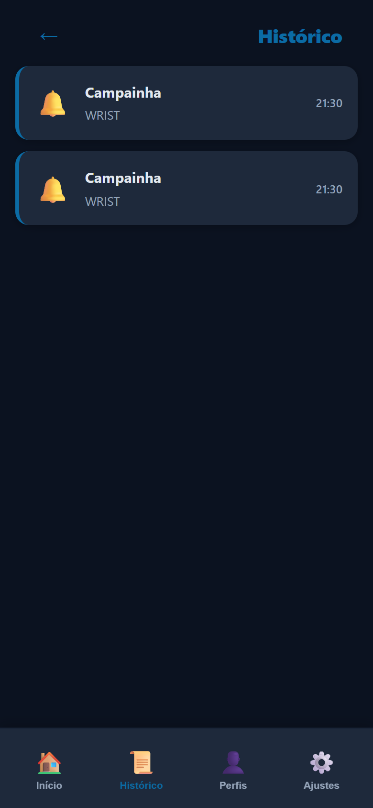
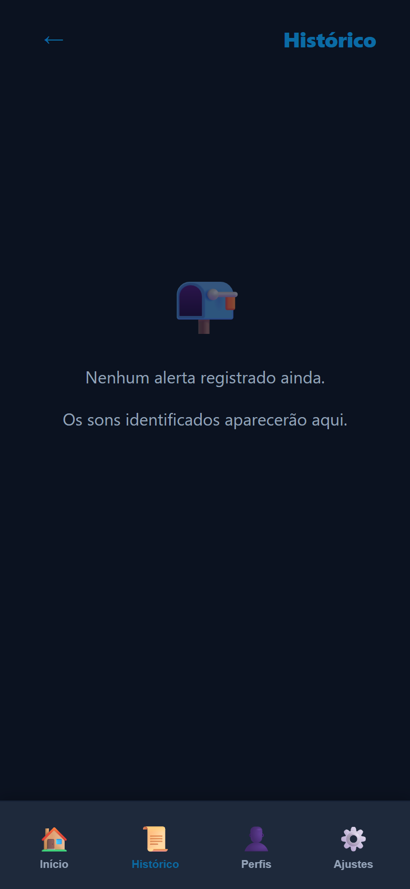
| Aspecto | Comportamento implementado |
|---|---|
| Persistência | Chave vibrotatil-historico em localStorage, como matriz JSON |
| Limite | 100 registros; os mais antigos são descartados ao exceder o limite |
| Ordenação | Decrescente por data de ocorrência; o registro mais recente ocupa o topo |
| Registro | Contém identificador único, rótulo, ícone, dispositivo de destino e carimbo de data e hora |
| Estado vazio | Exibido com mensagem explicativa quando não há registros |
| Sobrevivência | Os dados permanecem após o fechamento do aplicativo, diferentemente do estado em memória |
Os perfis permitem adaptar o comportamento do aplicativo a diferentes situações. O protótipo implementa a ativação e a criação de perfis, com quatro contextos predefinidos que correspondem a situaçõesbatimentais descritas na documentação do projeto.
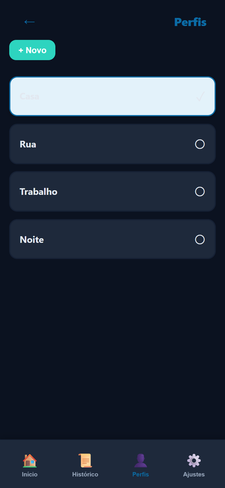
| Perfil | Contexto de uso típico | Ajustes esperados na versão real |
|---|---|---|
| Casa | Ambiente residencial econvívio familiar | Prioridade a campainha e choro de bebê; menor taxa de alarme de trânsito |
| Rua | Trânsito e áreas externas | Prioridade a buzinas; supressão de eventos domésticos; silenciamento do canal torácico |
| Trabalho | Ambiente profissional | Prioridade a chamada e voz; canal de voz humana ativo |
| Noite | Período noturno | Intensidade vibratória reduzida; apenas eventos críticos |
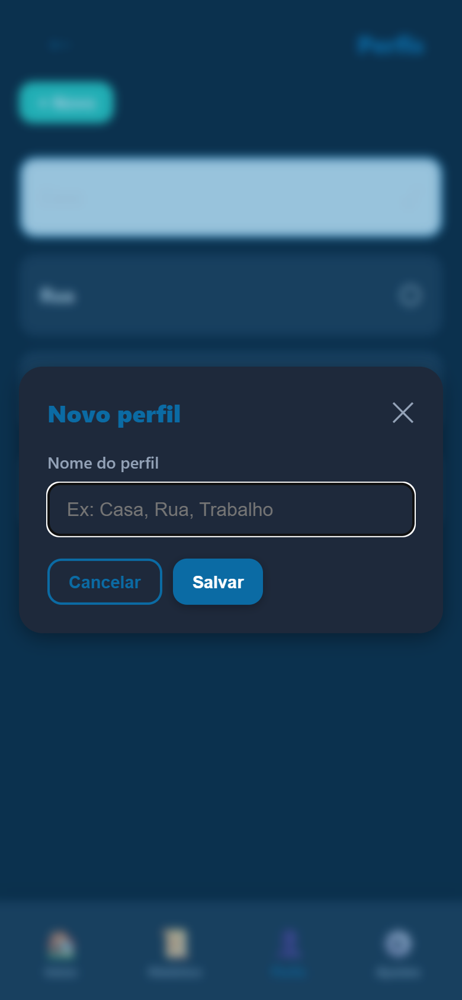
A tela de Ajustes concentra as preferências do usuário e as informações do aplicativo. Os controles se dividem em três blocos.
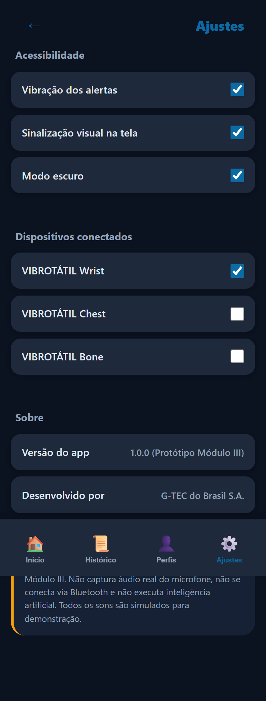
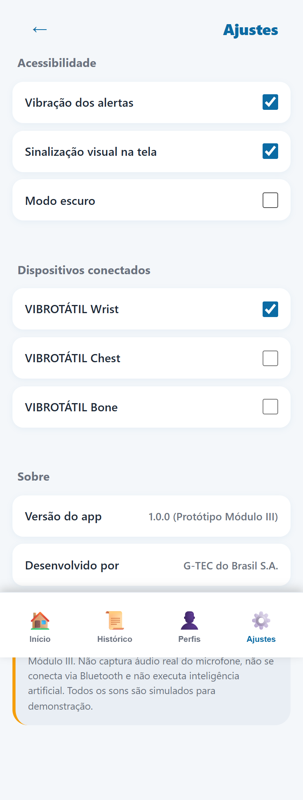
| Controle | Identificador | Estado inicial | Efeito |
|---|---|---|---|
| Vibração dos alertas | #toggle-vibracao | Ativado | Controla a chamada a navigator.vibrate() |
| Sinalização visual | #toggle-visual | Ativado | Controla a renderização do painel e da notificação |
| Modo escuro | #toggle-tema | Ativado | Alterna o atributo data-tema no elemento raiz e sincroniza a cor da barra de status do sistema |
| Wrist / Chest / Bone | #toggle-wrist e afins | Wrist ativado | Simula a conexão do dispositivo e emite notificação de confirmação |
A preferência de tema é persistida na chave vibrotatil-tema, de modo que a
escolha do usuário é restaurada em sessões subsequentes. O modo escuro é o padrão de
fábrica, aplicado já no elemento raiz do documento para evitar o breve|display de tema claro
durante a carga da página.
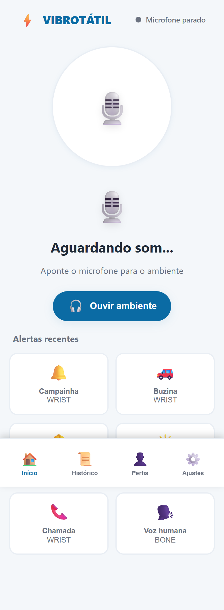
aria-live para
anúncio por leitor de tela, e presença de role="alert" nos elementos de
mensagem. A tipografia parte de 1rem como base, coherente com a preferência por tamanho
grande do público-alvo.
O projeto é composto por três arquivos-fonte, dois scripts de apoio à engenharia e a documentação. Nenhuma etapa de compilação ou empacotamento é necessária: o código é entregue em sua forma executável.
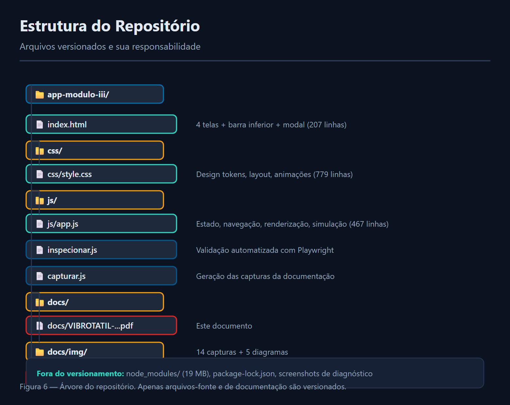
| Arquivo | Linhas | Responsabilidade |
|---|---|---|
index.html | 207 | Estrutura das quatro telas, barra de navegação global, modal de perfil, notificação e marcação semântica |
css/style.css | 779 | Design tokens, layout, componentes, animações e regras de impressão |
js/app.js | 467 | Estado, navegação, renderização das listas, simulação de eventos e persistência |
inspecionar.js | não se aplica | Validação automatizada com Playwright: navegação, renderização, interação e console |
capturar.js | não se aplica | Geração das capturas de tela usadas neste documento |
gerar-diagramas.js | não se aplica | Geração programática dos cinco diagramas em SVG |
docs/ | não se aplica | Este documento, sua fonte editável e os recursos gráficos |
A paleta, a tipografia, os raios de arredondamento e as transições são definidos como propriedades customizadas na raiz do documento. Essa centralização permite que o tema claro e o escuro difiram apenas nos valores das variáveis, sem duplicação de regras.
| Token | Valor claro | Valor escuro | Aplicação |
|---|---|---|---|
--cor-primaria | #0b6ba4 | #0b6ba4 | Marca, botões primários, ícones de navegação ativos |
--cor-secundaria | #2dd4bf | #2dd4bf | Destaques de ação, vibração visual, indicadores de sucesso |
--cor-fundo | #f4f7fa | #0b1220 | Fundo da aplicação |
--cor-superficie | #ffffff | #1e293b | Cartões, listas e barra de navegação |
--cor-texto | #1f2937 | #e2e8f0 | Texto principal |
--cor-texto-suave | #6b7280 | #94a3b8 | Textos secundários e legendas |
--cor-destaque | #f59e0b | #f59e0b | Avisos, marcações de pendência |
O protótipo utiliza localStorage como mecanismo de persistência, com duas chaves
e finalidades distintas.
| Chave | Tipo | Conteúdo e finalidade |
|---|---|---|
vibrotatil-tema | Texto | Valores claro ou escuro. Preserva a preferência de tema entre sessões |
vibrotatil-historico | Matriz JSON | Até 100 registros de eventos detectados, com identificador, rótulo, ícone, dispositivo e carimbo de data e hora |
O restante do estado, a saber, perfis, dispositivos conectados, preferências de vibração e sinalização, permanece em memória e é reiniciado a cada abertura. Essa separação é intencional: somente os dados que o usuário perderia de formaizo frustrante são persistidos.
Durante o desenvolvimento, três decisões merecem registro por afetarem a portabilidade do código.
| Decisão | Alternativa descartada | Justificativa |
|---|---|---|
| Script clássico, sem módulos | <script type="module"> |
Os navegadores bloqueiam módulos ES por política de origem cruzada quando a página é aberta diretamente do sistema de arquivos. A conversão para script clássico eliminou a falha, que impedia a totalidade das funcionalidades de operar. |
| Barra de navegação fora das seções | Nav aninhada na tela inicial | Quando aninhada, a barra desaparecia ao navegar, já que sua seção deixava de estar visível. Externalizá-la como elemento de nível superior mantém a navegação disponível em todas as telas. |
| Barra de rolagem oculta | Barra de rolagem nativa | A barra nativa reserva 15 px de largura, deslocando o contêiner do celular em relação ao centro da janela. A ocultação elimina o deslocamento e o artefato visual. |
O protótipo é acompanhado de um script de validação automatizada que executa o aplicativo em navegador real e verifica seu comportamento. O script é capaz de detectar regressões de interface que passariam despercebidas em inspeção manual, como a sobreposição de telas e o desalinhamento do contêiner, por exemplo, foram encontrados por essa via.
# Execução
npm install
npx playwright install chromium
node inspecionar.js
A última execução, sobre o commit 815d661, apresentou o seguinte resultado, sem
qualquer erro de console.
| Asserção | Resultado | O que previne |
|---|---|---|
| Apenas uma tela visível por vez | APROVADA | Regressão da sobreposição de telas |
| Seis atalhos renderizados | APROVADA | Falha de carga do script de comportamento |
| Navegação entre as quatro telas | APROVADA | Quebra de identificadores de seção |
| Item ativo acompanha a tela | APROVADA | dessincronização entre conteúdo e indicador |
| Quatro perfis renderizados | APROVADA | Falha na inicialização dos dados |
| Estado de escuta ativado | APROVADA | Falha no controle de estado do scanner |
| Detecção produz título, subtítulo e notificação | APROVADA | Falha no encadeamento do ciclo de feedback |
| Registro no histórico | APROVADA | Falha na persistência de eventos |
| Modal abre e fecha | APROVADA | Tela bloqueada por sobreposição do modal |
| Alternância de tema nos dois sentidos | APROVADA | Falha na aplicação do tema |
| Contêiner centralizado no desktop | APROVADA | Desalinhamento do layout fixo |
| Barra de navegação contida no contêiner | APROVADA | Elemento de interface ultrapassando a moldura |
| Ausência de erros de console | APROVADA | Falhas silenciosas de execução |
A suíte cobre comportamento observável, mas não substitui a avaliação com usuários reais. As seguintes dimensões permanecem não verificadas:
A transição do protótipo para o aplicativo funcional pode ser organizada em cinco camadas, cada uma com dependência de anterior. O vantajoso dessa ordem é que a camada de interface, que constitui a totalidade do trabalho realizado até aqui, permanece válida em todas as etapas.
| # | Camada | Requisitos técnicos | Dependências e riscos |
|---|---|---|---|
| 1 | Captura de áudio real | getUserMedia() com a API Web Audio, AnalyserNode e Permission API |
Exige contexto seguro (HTTPS), tratamento de permissão negada e consumo contínuo de bateria. Deve ser implementada como camada isolada, atrás do mesmo contrato de dados já existente. |
| 2 | DSP e pré-processamento | FFT para análise espectral, filtragem passa-banda por categoria, compressão dinâmica e normalização | Cada categoria exige faixa de frequência característica. Carregamento do processamento deve ocorrer em worker para não bloquear a interface. |
| 3 | Classificação | Modelo treinado, base de dados rotulada por categoria e por ambiente, limiar de confiança | É a camada de maior risco. O volume e a diversidade da base de dados determinam a taxa de acerto em ambiente real. Avaliar a generalização antes de afinar. |
| 4 | Integração com hardware | Bluetooth Low Energy com protocolo proprietário e camada de pareamento | A Web Bluetooth API é limitada e não disponível em todas as plataformas. A comunicação com dispositivos próprios pode exigir desenvolvimento nativo ou biblioteca intermediária. |
| 5 | Empacotamento e distribuição | Aplicativo web progressivo com manifesto e service worker, ou desenvolvimento nativo em Android e iOS | O aplicativo web progressivo oferece distribuição imediata eplicitação de ícone na tela inicial. O desenvolvimento nativo é necessário para desempenho contínuo do microfone em segundo plano. |
| Risco | Severidade | Mitigação proposta |
|---|---|---|
| Execução em segundo plano | ALTA | Sistemas operacionais móveis restringem o uso contínuo do microfone em segundo plano, especialmente em iOS. A solução passa por desenvolvimento nativo ou por um modelo de operação em janela ativa, com notificação persistente ao usuário. |
| Consumo de bateria | ALTA | Captura contínua de áudio consumirá energia de forma significativa. Demandará análise do perfil de consumo, decisão do usuário sobre duração da sessão e possibilidade de operação em vigília contínua. |
| Variabilidade da vibração | MÉDIA | Cada fabricante implementa a API de vibração de forma particular. O protótipo não pode normalizar a intensidade percebida. Testes em aparelhos reais são indispensáveis, e pode ser necessário um perfil de ajuste por fabricante. |
| Confiabilidade da classificação | ALTA | Falso negativo em evento de segurança tem consequência relevante. O sistema deve exibir o grau de confiança da detecção e admitir que opera como apoio, jamais como garantia. |
| Privacidade dos dados sonoros | ALTA | Capturar áudio ambiente implica tratar dados de terceiros e potencialmente de crianças. Deve ser definido se o processamento é local, se há gravação, por quanto tempo os dados permanecem e como são eliminados. |
| Confundibilidade dos padrões táteis | MÉDIA | Identificado na seção 4.4: os padrões de chamada, buzina e voz são estruturalmente próximos. Deve-se remodelar o conjunto e validá-lo com usuários antes de consolidá-lo. |
| Enquadramento regulatório | MÉDIA | Depende da jurisdição e da classificação do produto como tecnologia assistiva. Deve ser avaliado antes da distribuição comercial, com revisão da comunicação de marketing. |
O Módulo III encontra-se com a camada de interface concluída e documentada, e com a camada de comportamento implementada sobre dados simulados. As próximas etapas, em ordem de prioridade, são:
| Item | Referência |
|---|---|
| Protótipo publicado | https://jaimevendrame.github.io/vibrotatil/ |
| Repositório | https://github.com/jaimevendrame/vibrotatil |
| Commit documentado | 815d661, branch main |
| Documento institucional | VIBROTÁTIL®, apresentação do projeto, 2026 |
| Documento técnico do módulo | Funcionamento VIBROTÁTIL, descrição dos módulos I, II e III |
| Organização | Projeto em nome individual (CPF) |
| Tecnologias | HTML5, CSS3 com propriedades customizadas, JavaScript ES2020, Playwright 1.x (validação e captura) |
| Referência de vibração | API navigator.vibrate(), W3C Vibration Control, com suporte por plataforma |
815d661. Alterações
posteriores na interface invalidam as imagens; a regeneração é feita executando
node capturar.js e node gerar-diagramas.js, seguidos de
node docs/gerar-pdf.js. A data de emissão deve ser atualizada a cada revisão.
Fim do documento · VIBROTÁTIL® Connect, Protótipo do Módulo III · versão 1.0
© 2026 Projeto em nome individual (CPF). Todos os direitos reservados.